特退金脱退 処理漏れ防止アプリ（v1.1.2）
操作マニュアル
画面の写真つきで、毎日の使い方をまとめました。導入や技術の説明は README.md、業務の決まりごとは仕様書を見てください。
※ この資料の画面は、架空の会社・案件番号で作った見本です。
1このアプリでできること
特退金の脱退案件で、次の2つの漏れを防ぎます。
Outlook に届く案件メールから、案件の一覧（受付簿）を自動で作ります。期限を過ぎた案件は、一覧で赤く表示し、管理職へメールで知らせます。
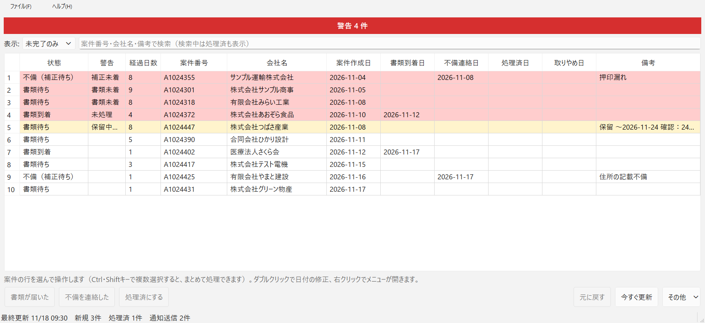
2最初の設定（1回だけ）
- アプリを起動し、画面の上の「ファイル」→「設定」を開きます。
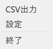
「ファイル」メニュー。「設定」を選びます。 - 「接続」に、テナントID・クライアントID・Outlook のフォルダ名を入力します（値は管理者から受け取ります）。
- 「通知」に、警告メールを受け取る管理職の宛先を入力します（2名まで）。
- 「接続テスト」を押して、Microsoft にサインインします。「フォルダが見つかりました」と出れば成功です。
- 「Windows起動時に自動で起動する」にチェックを入れて、「Save」を押します。
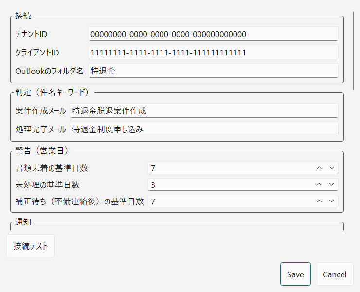
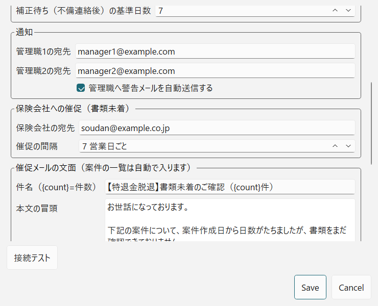
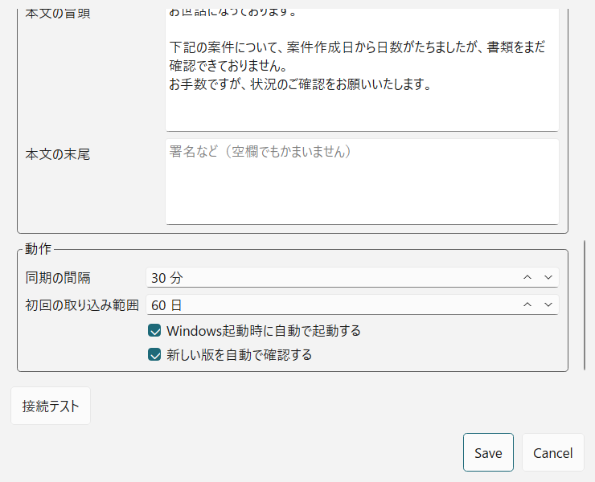
設定画面は縦にスクロールできます。「接続テスト」と「Save」は、画面の下に常に表示されています。
3毎日の使い方
アプリは、Windows を起動すると自動で立ち上がり、トレイ（画面右下）に常駐します。メールは、設定した間隔（初期値30分）で自動で取り込みます。普段は、何も操作しなくても動き続けます。
やることは、次の2つです。
3.1画面の見方
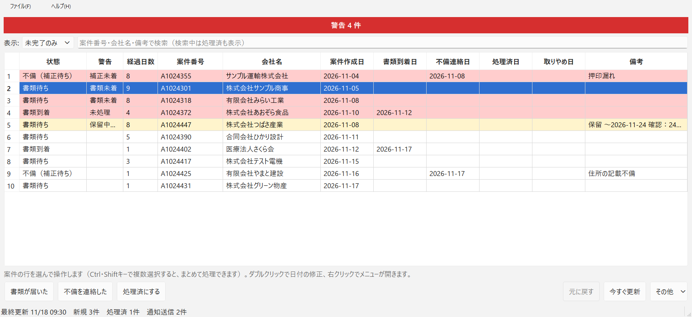
1 2 3 4 5 6 7 8 9- 上部のメニュー：「ファイル」（CSV出力・設定・終了）と「ヘルプ」（使い方・バージョン情報）。3.6
- バナー：緑＝警告なし、赤＝警告あり（件数を表示）、黄＝サインイン切れ（5章）。
- 表示（プルダウン）：「未完了のみ」「すべて」「警告のみ」「不備のみ」から選びます。
- 検索：案件番号・会社名・備考で探せます。検索中は、処理済・取りやめの案件も表示します。
- 一覧：案件が1行ずつ並びます。赤い行が警告の案件、薄い黄色の行が保留中の案件です。見出しをクリックすると並び替え、見出しをドラッグすると列の順番を変えられます（次回も引き継ぎます）。
- 記録のボタン：選んだ案件の状態に合うものだけ押せます（3.3）。
- 元に戻す：直前の操作を取り消します（Ctrl+Z）。
- 今すぐ更新・その他：すぐにメールを取り込む／案件の操作（保留・取りやめ・修正など。3.6）。
- 最終更新：下部の左側に、「最終更新」の時刻と、取り込んだ件数が出ます。
会社名で並べるときは、先頭・末尾の法人の種類（株式会社・有限会社・医療法人など）を無視します（「株式会社甲」と「甲株式会社」は、同じ「甲」として並びます）。読み仮名のデータはないため、漢字は文字コード順です。無視する語は、法人略称表（corporate_abbr.csv の formal 列）で増減できます。
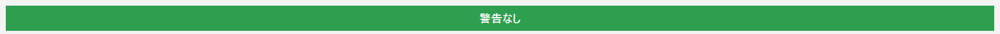
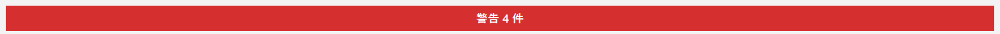
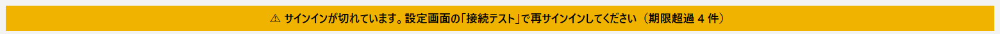
状態
どの状態からでも、事情が変わったときは 取りやめ にできます（3.4）。
| 状態 | 意味 |
|---|---|
| 書類待ち | 案件を作成し、書類が届くのを待っている |
| 不備（補正待ち） | 不備を連絡し、補正の書類を待っている |
| 書類到着 | 書類が届き、WEB処理を待っている |
| 処理済 | 処理が完了した（グレーで表示） |
| 取りやめ | 退職をやめたなど、案件そのものを取りやめた（グレーで表示。警告・催促の対象外） |
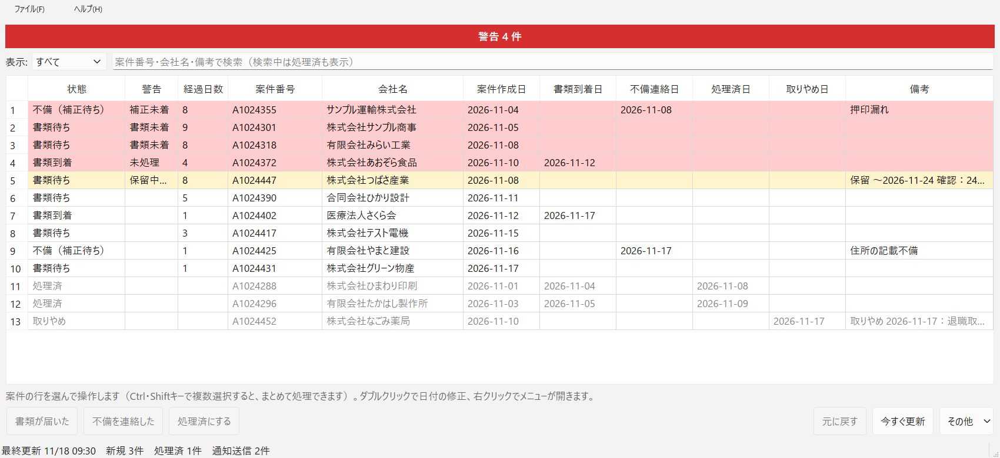
警告
次の3種類です。営業日で数え、日数は設定で変えられます。
| 警告 | 条件 | 初期値 |
|---|---|---|
| 書類未着 | 書類待ちのまま、案件作成日から基準日数以上 | 7営業日 |
| 補正未着 | 不備を連絡した日から基準日数以上、補正書類が届かない | 7営業日 |
| 未処理 | 書類到着日から基準日数以上、処理が済まない | 3営業日 |
事業所に連絡して待っている案件は、保留にすると、確認日まで警告が止まります。一覧の「警告」の列には「保留中…」と出て、薄い黄色で表示されます（マウスを乗せると、確認日が見えます。3.5）。
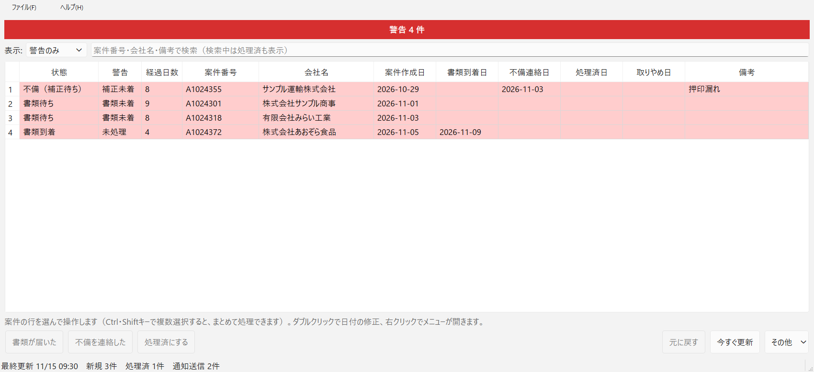
3.2警告が出たとき
新しい警告が出ると、トレイから吹き出しが出ます。画面が隠れているときは、画面が前面に出ます。管理職には、警告のメールも自動で届きます（同じ案件・同じ種類は1日1回まで）。
一覧で赤い案件を確認し、書類の確認・WEB処理など、必要な対応をします。対応したら、次の記録をします。
3.3案件を記録する
一覧で案件の行を選んで、下のボタンを押します。ボタンは、選んだ案件の状態に合うものだけ押せます。日付を聞かれるので、入力します。
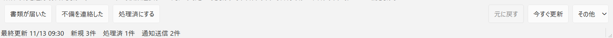
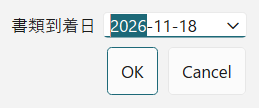
| ボタン | いつ使うか |
|---|---|
| 書類が届いた | 書類が届いたとき（書類到着日を記録する） |
| 不備を連絡した | 書類に不備があり、連絡したとき（不備連絡日を記録する） |
| 処理済にする | WEB処理が完了したとき（処理済日を記録する） |
| 元に戻す | 直前の操作を取り消す（Ctrl+Z。直前の10回まで） |
| 今すぐ更新 | すぐにメールを取り込みたいとき |
- Ctrl・Shiftキーで複数の案件を選ぶと、まとめて同じ日付を記録できます。ボタンには対象の件数が付きます。
- 処理済・取りやめの案件には、到着・不備・処理済を記録できません。
- 「処理完了メール」が届くと、案件は自動で処理済になります。書類到着日は、空のままでかまいません（書類が届いてすぐ処理する運用では、「書類が届いた」は押さなくてよい）。
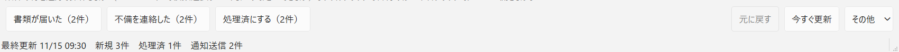
3.4退職をやめたとき（取りやめ）
事業所の都合などで、退職をやめた案件は、取りやめにします。放っておくと、書類未着の警告や、保険会社への催促が、出続けてしまいます。
- 一覧で案件の行を選び、「その他」（または右クリック）→「取りやめにする」を押します。複数の案件を、まとめて取りやめにもできます。
- 取りやめ日（初期値は今日）と、理由（任意。例: 退職取りやめ）を入力して、OKを押します。
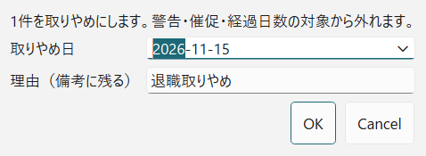
取りやめ日と、理由（任意）を入力します。 - 案件は、状態が「取りやめ」になり、グレーで表示されます。取りやめ日と理由は、備考にも残ります（例:
取りやめ 2026-11-14：退職取りやめ）。
取りやめにした案件は、次のようになります。
- 警告（赤い行・バナーの件数・管理職へのメール）と、保険会社への催促の対象から外れます。経過日数も、空欄になります。
- 「未完了のみ」の表示には出ません。「すべて」の表示と、検索には出ます。
- 取りやめ日から1年（365日）たつと、処理済と同じく、自動で削除されます。
- 直前の操作なら、「元に戻す」（Ctrl+Z）でも戻せます。
処理済の案件は、取りやめにできません。「処理済にする」で代用しないでください。
3.5事業所に連絡して待つとき（保留）
警告のあと、事業所に連絡して「送る」と返事をもらったのに、書類がなかなか届かないことがあります。そのまま毎日、警告のメールが管理職に届くのを避けるために、案件を保留にします。
- 一覧で案件の行を選び、「その他」（または右クリック）→「保留にする（連絡済み・待つ）」を押します。複数の案件を、まとめて保留にもできます。
- 確認日を、プルダウンから選びます（1〜10営業日後。初期値は3営業日後。土日・祝日は数えません。日付も一緒に表示されます）。メモ（任意。例: 26日に送ると連絡あり）も入力できます。
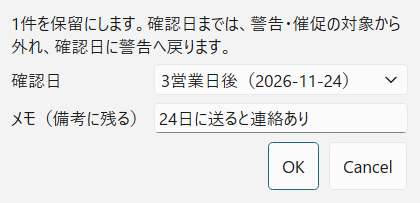
確認日（営業日後）と、メモ（任意）を入力します。 - 案件は、保留中になり、一覧の「警告」の列に「保留中…」と出て、薄い黄色で表示されます。確認日と、メモは、備考にも残ります。
保留中の案件は、次のようになります。
- 警告（赤い行・バナーの件数・管理職へのメール）と、保険会社への催促の対象から外れます。
- 「未完了のみ」の表示には、残ります。状態や経過日数は、そのままです。
- 確認日になると、自動で警告に戻ります。まだ届かなければ、もう一度、保留にします。
- 書類が届いた・不備を連絡したときは、保留は自動で解けます（届いたあとの未処理の警告を、隠さないためです）。
- 処理済・取りやめの案件は、保留にできません。
3.6メニューと右クリック
案件の操作は、「その他」ボタンか、行の右クリックから行います（案件をダブルクリックすると、日付を修正できます）。
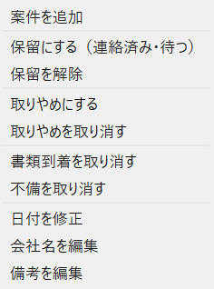
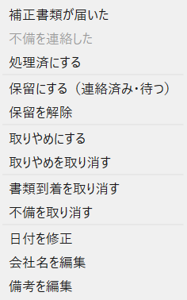
- 案件を追加：メールが取り込めなかった案件を、手で足します。
- 保留にする／保留を解除（3.5）
- 取りやめにする／取りやめを取り消す（3.4）
- 書類到着を取り消す／不備を取り消す
- 日付を修正：日付の入れ間違いを直します。チェックを外した日付は、空になります。
- 会社名を編集／備考を編集
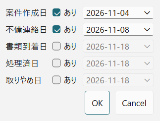
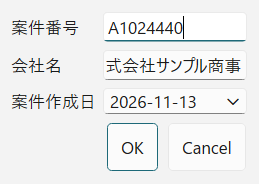
画面の上部のメニューには、次の項目があります。
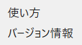
- ファイル：CSV出力（Excelで開ける形式で、一覧を書き出す。取りやめ日・保留の確認日の列も入る）／設定／終了
- ヘルプ：使い方（操作マニュアルを、画面で開く）／バージョン情報（版と、データの場所）
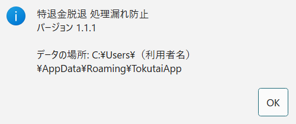
4トレイと終了
- ウィンドウの × で閉じても、アプリはトレイに残って、メールの確認を続けます。
- トレイのアイコンをクリックすると、画面が開きます。右クリックすると、「開く」「今すぐ更新」「終了」のメニューが出ます。
- アイコンの色は、緑＝正常、赤＝警告またはサインイン切れです。
- 1台のPCで起動できるのは1つだけです。2つ目を起動すると、すでにある画面が前面に出ます。
- メールの取り込みと警告は自動なので、普段は、画面を開かなくてかまいません。次のときだけ、画面が自動で前面に出ます。
- PCを起動して、自動で起動したとき（Windows起動時の自動起動）
- スリープから復帰したとき、日付が変わっていた場合（夜にスリープして、翌朝に復帰したときなど。復帰の少しあとに、メールも取り込みます）
- 新しい警告が出たとき（3.2）
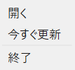
5サインインが切れたとき
Microsoft 365 のサインインが切れると、メールを取り込めなくなります。このとき、次の表示が出ます。
- 画面上部が、黄色の「⚠ サインインが切れています。設定画面の『接続テスト』で再サインインしてください」に変わる。
- トレイのアイコンが、赤になる。
- 検知した日に1回、案内のダイアログが出る。
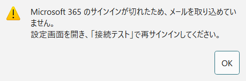
6保険会社への催促メール
書類が届かない案件について、保険会社へ催促のメールを送れます。自動では送らず、必ず送る前に確認します。
6.1設定
「ファイル」→「設定」の次の項目を入力します。
| 項目 | 内容 |
|---|---|
| 保険会社の宛先 | 催促メールの宛先。複数のときは ; で区切る。空欄の間は、この機能は動かない |
| 催促の間隔 | 案件作成日から、何営業日ごとに催促するか（初期値7） |
| 件名 | 件名。{count} と書くと、案件の件数に置き換わる |
| 本文の冒頭／末尾 | 本文の最初と最後の文章。案件の一覧は、この間に自動で入る |
6.2送り方
- 対象は、状態が「書類待ち」の案件です。案件作成日から、間隔の営業日（例: 7、14、21営業日目）に達すると、候補になります。
- 起動時と取り込みのあとに、候補があれば、確認の画面が出ます。送る案件にチェックを入れ、メールの内容を見て、次のどれかを選びます。
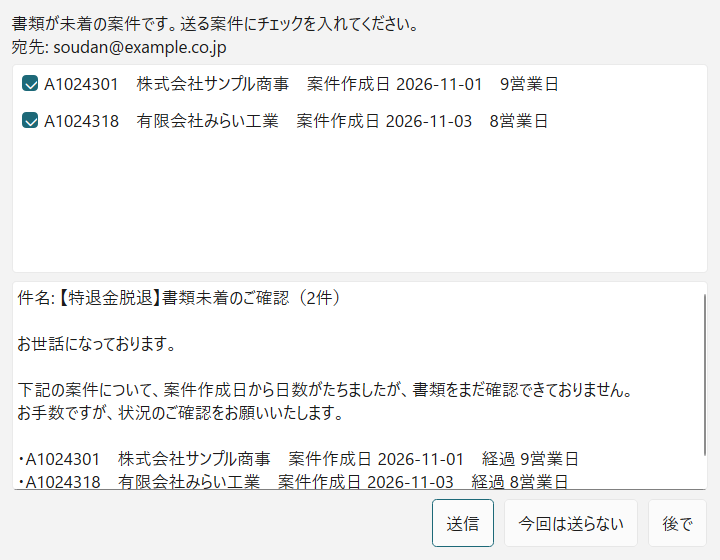
| ボタン | 動き |
|---|---|
| 送信 | チェックした案件を、1通にまとめて送る。チェックを外した案件は、その区切りでは、もう聞かない |
| 今回は送らない | 送らない。その区切りでは、もう聞かない |
| 後で | 何も記録しない。次の機会に、また確認する |
- 同じ案件は、同じ区切りでは1回しか聞きません。さらに日数がたって、次の区切りに達すると、また候補になります。
- 送信に失敗したときは、何も記録せず、次の機会に、また確認します。
7設定項目の一覧
| グループ | 項目 | 内容 |
|---|---|---|
| 接続 | テナントID・クライアントID・Outlookのフォルダ名 | Microsoft 365 への接続情報 |
| 判定 | 案件作成メール・処理完了メール | 件名に含まれる言葉（初期値は、特退金脱退案件作成／特退金制度申し込み） |
| 警告 | 3つの基準日数 | 書類未着・未処理・補正待ちの警告を出す営業日数 |
| 通知 | 管理職1・2の宛先、自動送信 | 警告メールの宛先と、送るかどうか |
| 保険会社への催促 | 宛先・間隔 | 6章 |
| 催促メールの文面 | 件名・冒頭・末尾 | 6章 |
| 動作 | 同期の間隔 | メールを取り込む間隔（初期値30分） |
| 動作 | 初回の取り込み範囲 | 最初に何日前までのメールを取り込むか（初期値60日） |
| 動作 | Windows起動時に自動で起動する | 自動起動するかどうか |
| 動作 | 新しい版を自動で確認する | 新しい版の通知を受け取るかどうか（初期値はオン。9章） |
数値の欄は、マウスのホイールでは変わりません（上下のボタンか、キーボードで変えます）。
8バックアップと復元
- データは、
%APPDATA%\TokutaiApp\に保存されます。 - バックアップは、1日1回、
backupフォルダに自動で残ります（30世代、約1か月分）。 - 処理済日（または取りやめ日）から1年（365日）たった案件は、自動で削除されます。必要な控えは、「ファイル」→「CSV出力」で書き出しておきます。
8.1復元するとき
- アプリを終了します（4章）。
- 戻したい日の
backup\tokutai_YYYYMMDD.dbを、tokutai.dbの名前でコピーして、置き換えます。 - アプリを起動します。
9インストールと更新
9.1インストール
- GitHub の Release（https://github.com/mozu93/tokutaikin/releases）から、
TokutaiApp-Setup-<版>.exeを取得します。 - ダブルクリックして、画面の案内に従って進めます（管理者権限は要りません）。
- 完了すると、アプリが起動します。デスクトップとスタートメニューに、ショートカットができます。
- 「2. 最初の設定」を行います。
- 取得は、必ず上の公式の Release から行います。
- 取得したフォルダで、PowerShell を開き、次を実行します（
<版>は、実際の版に置き換えます）。
Get-FileHash .\TokutaiApp-Setup-<版>.exe -Algorithm SHA256 - 表示された値が、Release に添付されている
TokutaiApp-Setup-<版>.exe.sha256の値と一致したときだけ、実行します。一致しないときは、実行せず、管理者に相談してください。 - 値が一致したうえで、Windows の画面に「WindowsによってPCが保護されました」と出たときは、「詳細情報」を押し、「実行」を選びます。
アンインストールは、Windows の「設定」→「アプリ」→「インストールされているアプリ」から行います。受付簿や設定（%APPDATA%\TokutaiApp\）は、アンインストールしても残ります。
9.2新しい版の通知と更新
新しい版が公開されると、アプリが自動で気づきます（起動の少しあとと、1日1回、確認します）。
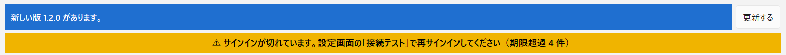
- 画面を開いているときは、変更点の案内も出ます。画面が隠れているときは、トレイから吹き出しで知らせます。
- 「更新する」を押したときだけ、更新します。押すまでは、何も変わりません。「後で」を選べば、そのまま使い続けられます。
- 更新すると、アプリが終了し、インストールのあと、自動で起動し直します。受付簿・設定・サインイン情報は、そのまま使えます。
- 更新の前後で、メールの取り込みや案件の記録を、途中にしないよう、ほかの操作が終わってから押してください。
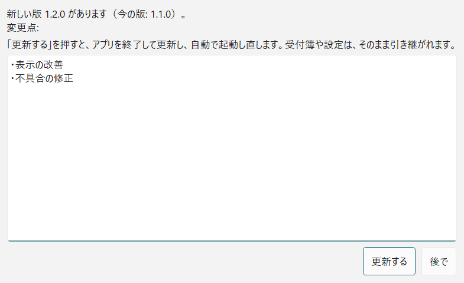
更新に失敗したときは、メッセージが出ます。しばらくしてから、もう一度試してください（今のアプリは、そのまま使えます）。
更新の通知が不要なときは、設定の「新しい版を自動で確認する」のチェックを外します。
10こんなときは
| 状況 | 対処 |
|---|---|
| メールが取り込まれない | 画面上部に黄色のバナーが出ていれば、5章の再サインインをする。出ていなければ、画面下部のエラー表示を見る。設定のフォルダ名・件名のキーワードも確認する |
| 案件番号を読み取れないメールがある | 画面下部にエラーが出る。メールの内容を確認し、必要なら「案件を追加」で手で足す |
| 会社名が空、または「受付メール未確認」と出る | 処理完了メールが、案件作成メールより先に届いた案件。案件作成メールが届くと、自動で補われる。急ぐときは「会社名を編集」で直す |
| 事業所に連絡して待っているのに、警告のメールが毎日届く | 案件を「保留」にする（3.5）。確認日（1〜10営業日後）まで警告・催促が止まり、確認日に警告へ戻る |
| 退職をやめた案件の警告・催促を止めたい | 案件を「取りやめ」にする（3.4）。「処理済にする」では代用しない |
| 誤って記録した | 「元に戻す」（Ctrl+Z）。取り消せない場合は、「日付を修正」「書類到着を取り消す」「不備を取り消す」で直す |
| 画面が見つからない | トレイのアイコンをクリックする。タスクバーに出ていないときも、トレイに残っている |
| 古いデータを戻したい | 8章の復元をする |
| 新しい版の通知が出ない | 設定の「新しい版を自動で確認する」がオンか確認する。通信できない環境では、確認できない。次の確認（1日1回）を待つか、アプリを起動し直す |